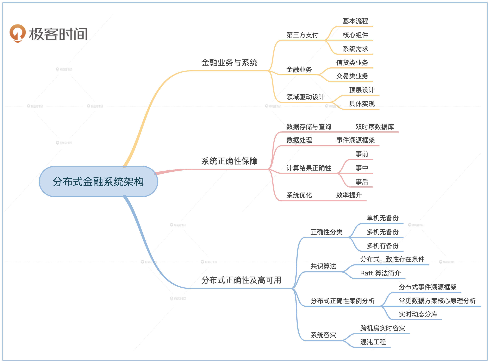

- 00 开篇词 如何成为金融级人才？.md.html
- 01 业务初探：扫了二维码之后发生了什么？.md.html
- 02 原理解读：如何理解第三方支付的业务逻辑和系统组件？.md.html
- 03 产品大观：不同金融业务都有哪些技术实现要点？.md.html
- 04 领域驱动设计（上）：如何设计金融软件顶层架构？.md.html
- 05 领域驱动设计（下）：如何设计统一的金融业务模型？.md.html
- 06 计算输入的正确性：怎么选择正确时间的数据？.md.html
- 07 计算过程的正确性：如何设计正确的数据处理架构？.md.html
- 08 计算结果的正确性：怎么保证计算结果是正确的？.md.html
- 09 数据传输的质量：金融业务对数据传输有什么要求？.md.html
- 10 数据存储的合理性：金融业务可以不用关系型数据库吗？.md.html
- 11 系统优化：如何让金融系统运行得更快？.md.html
- 12 正确性分级（上）：单机无备份有哪几种不同的一致性？.md.html
- 13 正确性分级（中）：多机无容灾有哪几种不同的一致性实现？.md.html
- 14 正确性分级（下）：多机有容灾有哪几种不同的一致性？.md.html
- 15 分布式正确性的存在性（上）：什么情况下不存在分布式共识算法？.md.html
- 16 分布式一致性（下）：怎么理解最简单的分布式一致性算法？.md.html
- 17 正确性案例（上）：如何实现分布式的事件溯源架构？.md.html
- 18 正确性案例（中）：常见分布式数据方案的设计原理是什么？.md.html
- 19 正确性案例（下）：如何在运行时进行数据系统的动态分库？.md.html
- 20 容灾（上）如何实现正确的跨机房实时容灾？.md.html
- 21 容灾（下）：如何通过混沌工程提高系统稳定性？.md.html
- 春节策划第1期 分布式金融系统知识，你掌握了多少？.md.html
- 春节策划第2期 读书如抽丝，为你推荐一些我读过的好书.md.html
- 春节策划第3期 如何运用架构知识解读春运买票和手游案例？.md.html
- 答疑集锦（一） 思考题解析与外汇架构知识拓展.md.html
- 答疑集锦（三） 思考题解析与数据库底层实现.md.html
- 答疑集锦（二） 思考题解析与账务系统优化.md.html
- 结束语 金融之道，与你同行，虽远尤欣.md.html
- 捐赠
00 开篇词 如何成为金融级人才？
你好，我是任杰。从今天开始，我将带你深入探索分布式金融系统架构。
说起金融，这是一块硬骨头，我甚至觉得，金融系统是架构界的珠穆朗玛峰，登峰不易，但是一旦攀登上来了，就会发现这边风景独好。
我这么说，也不仅仅是因为自己在金融领域摸爬滚打了十几年，亲身体验了所以盲目自信，这几乎也是一种共识。
我还记得很多年前大学软件工程课上，老师介绍过几个最复杂的软件系统，有军用软件、操作系统，还有金融行业的软件。
军用软件的复杂度在于需要实时处理武器信号，操作系统的复杂度在于需要在功能的多样性和效率之间做一个良好的平衡，而金融软件的复杂度在于如何在软件系统的演进过程中保持并证明系统的正确性。
金融软件这么复杂，那它独特的魅力又在哪儿呢？
这就得从08年金融危机前夜的时候聊了，那会儿我刚刚毕业，阴差阳错地进入摩根士丹利做了一名程序员，一呆就是近十年。
这期间，我目睹了华尔街金融公司由盛转衰的过程。盈利压力迫使公司对系统做了大刀阔斧地升级，我也有幸全程参与了这个改造过程，了解了金融公司大部分的系统和几乎所有金融产品。
之后我便从面向企业的金融业务转向了面向大众的普惠金融。这期间我担任过很多角色。作为机构用户，我对接过第三方支付系统；在蚂蚁金服亲身了解过成熟的第三方支付系统；在eBay呢，我带着团队从头实验了一个更好的第三方支付系统。
这十多年来，我每天都在解决金融系统大大小小的各种问题，同时，我也在这件又复杂又困难的事情中获得了极大的成就感。在这个过程中，我渐渐地把零碎庞杂的知识和经验都串联了起来，形成了自己的一套体系。
正是因为这些经历，最近几年，身边越来越多的朋友找到我，他们的金融系统也希望通过重构来解决历史遗留问题，但是踩坑不断，希望我能给一些系统的经验。这样的交流多了，我发现，金融软件似乎已经成了某种行业标准，现在大家都在谈“金融级软件”和“金融级人才”了。
那到底什么是金融级软件呢？怎样才能成为金融级人才呢？
首先，我们得知道金融软件要解决的核心问题是什么？没错，就是钱！钱一旦处理错了，那可就是真金白银的损失，所以任何一家金融机构对系统错误都是零容忍的。
这样的特殊性，使得金融级软件系统区别于很多其它的大型软件系统，它对正确性以及速度都提出了更高的要求。
那面对这样的金融级软件，金融级人才又需要怎样的能力呢？
假如你现在是一个金融系统的负责人，你需要在系统正确性和吞吐量之间做个选择。很显然你会毫不犹豫地选择正确性。
但是如果有人告诉你，系统吞吐量出现了问题，用户可能就转不了钱了，这样会造成恶意挤兑，从而形成恶性群体性事件。那么你又该如何选择呢？你很有可能会进退维谷，在两难之间犹豫。
其实这个例子就反映了我们对金融软件质量的要求。衡量软件质量有很多种不同角度，一般的软件我们会选择在矛盾中取舍，但是金融软件则要求我们尽可能在所有的地方都做到最好。
这种在矛盾中同时追求极致的要求，就是对金融级人才最大的挑战。这也是你进阶资深架构师乃至公司技术决策者的必经之路。
如果你想同时改善两个相互矛盾的需求，比如我们前面说的系统正确性和吞吐量，就需要付出巨大的代价。这个代价不仅仅是指开发成本或者运营成本，还包括了你的思考成本。你不仅仅要在有限的资源下，思考如何调和各种矛盾的需求，还要考虑怎么保证未来系统迭代之后，还能坚守现在的系统承诺。
这就考验到金融级人才的一个核心能力——透过现象看本质。了解了本质，也就能推演出事物发展的规律，从而把握先机，未雨绸缪。
总结一下，金融级系统需要滴水不漏，而金融级人才要求见微知著。
这门课是怎么设计的？
我们这门课的目的就是带你实现金融级架构，帮助你成为金融级人才。
我是从对事和对人这两个角度来设计课程的。
对事的角度比较简单。我希望你能在学完所有课程之后，对金融行业需要怎样的系统建立一个比较全面的认识，知道系统里都包括哪些重要组成部分，以及每个部分的技术挑战点在哪里，常见的技术解决方案都有哪些。
最重要的是，你会掌握金融软件架构的整体思路，知道都有可能出现哪些矛盾，以及出现这些矛盾的时候你都有哪些选择。
对人的角度比较困难，也是我个人的一些期许。在这短短的二十多讲里，我会带你初步了解金融业务为什么会有这么多分类，金融软件究竟解决的是什么业务问题，金融软件系统是怎么一步步发展到现在这个样子的。还有最重要的一点，我会为你剖析上述问题的本质究竟是什么。
为了帮助你循序渐进地学习，我把这个专栏分为3大部分。
第一部分，金融与业务系统。
这部分我们将围绕常见的金融业务生态及其系统架构需求进行讲解，重点包括第三方支付、交易所、券商、银行和投资银行等等。搞懂了这些金融机构和业务的特点，我们还要总结共性和技术逻辑，给你分析如何利用领域驱动设计的思想来更好地解决金融软件的复杂度问题。
第二部分，系统的正确性保障。
了解了金融业务以后，我们就可以对金融软件质量提出要求了。这部分我们重点学习如何保证金融系统架构的正确性，具体包括业务处理的正确性以及数据处理的正确性，它们是金融系统的必选项。最后，我还会讲到系统优化，让你在保证系统高正确性的同时，也能合理追求速度。
第三部分，分布式正确性及高可用。
针对复杂系统一定是重在实践的，所以这部分我会以分布式系统环境为背景，重点讨论分布式一致性的存在条件、分布式共识算法、分布式的事件溯源架构、分布式数据方案的设计原理以及数据系统的实时动态分库等等。
这部分的每节课都是线上环境中会遇到的关键问题。学习难度逐渐升级，结合实际案例，寻找问题本质，落地前面所学。另外，我还会分享一个金融领域绕不开的话题——容灾，重点讲解跨机房实时容灾以及如何提高系统稳定性。

好了，关于课程设计我就交代到这里。我真的希望能够和你在课程里相遇，我们一起死磕金融系统。课程的内容确实覆盖广、难度也不低，课程里讲解方案、思路的内容会比较容易一些，而深入原理的部分会有一定挑战性。所以我也先给你一些学习小窍门。
如果原理讲解的内容，你学起来感觉很吃力，建议你可以先通读一下，对整体思路有一个认识以后，再深入学习难点部分。如果你想对金融架构的理解更上一层楼，就绕不开这爬坡的过程，这也是我自己学习的一点经验。当然了，有什么问题你可以通过留言反馈给我，我们一同交流探讨。总之，我希望你碰到困难不要放弃。
最后，我想和你说几句我的心里话，也是我这几年一直在思考的事儿。
金融行业属于国之重器。但是，金融软件和很多其它行业专用软件一样，一直以来都处在国外垄断、国内追赶的过程。
这些年，金融改革和开放步伐也越来越快了，我们既会碰到国内日益增长的金融需求，也会碰到国外成熟金融系统的降维打击。这个行业太需要人才了，如果你有兴趣加入，那么这大概是一个最好的时代，和一百多年前一样，我们可以师夷长技以制夷，从容应对，大展身手。
好了，事虽难做则必成，就让我们开始金融系统的探索之旅吧。最后的最后，送给你一句话，作为我们的开课寄语。
金融系统是一条通往软件工程巅峰的少有人走的路，坚持下去，最终一定能会当凌绝顶，一览众山小。
© 2019 - 2023 Liangliang Lee. Powered by gin and hexo-theme-book.